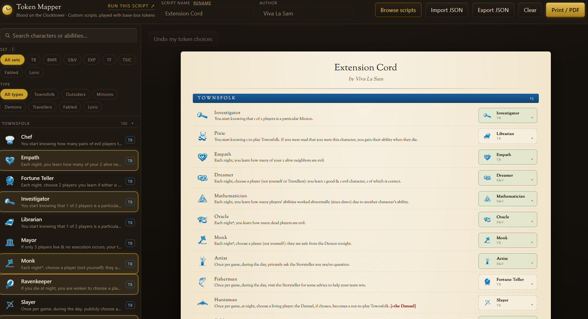

Blood on the Clocktower Token Mapper
- JavaScript
- Cloudflare Pages
- Cloudflare D1
A free tool that turns any custom script into printable token sheets, so groups stop hand writing substitutes before every game.
The base box ships around 20 characters, but almost nobody plays those. Groups pull a custom script off the community site, then either buy more tokens or scribble replacements on blanks.
Paste in a script and the mapper works out which spare token can stand in for each missing character, then prints ready to cut player sheets and a storyteller night order sheet built around that substitution.
One self contained HTML file with no dependencies, behind a Content Security Policy that pins the hash of its single inline script, so nothing else can execute on the page. Print activity goes to Cloudflare D1 anonymously, counts and country only.
